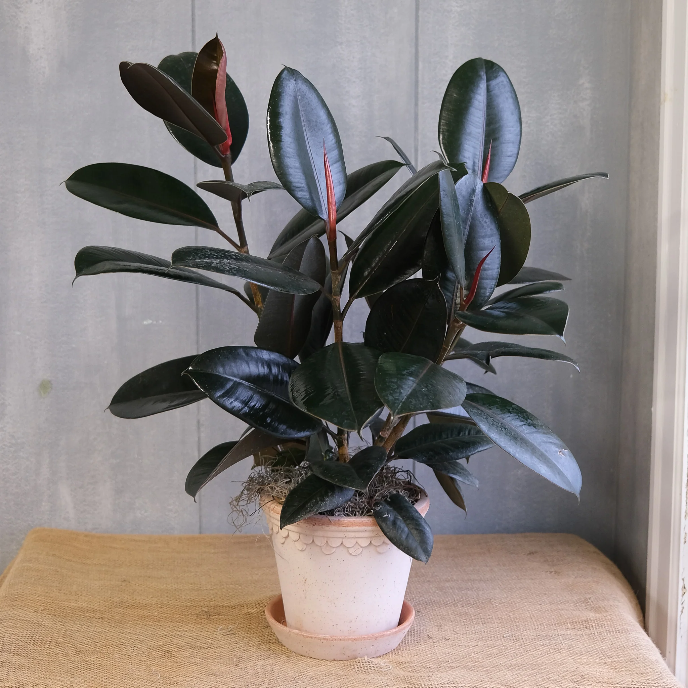

The Rubber Plant is a stylish plant with glossy leaves and excellent air-purifying qualities.
Prefers bright indirect light.
Water weekly; let the top soil dry slightly.
Best at 20–28°C.
Repot every 1–2 years for height increase.